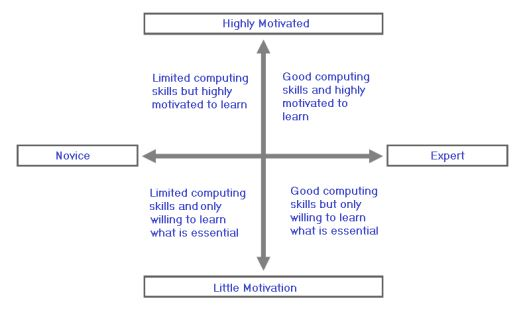
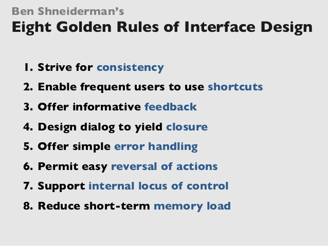

Human Perception and Cognition
Introduction
Memory
Visual Perception
Auditory Perception
Speech Perception
Haptic Perception
User centered Design
Usability Design Process
Approaches that focus on UX/Usability are often called user-centered design
Waterfall model
Requirements → design → implementation → verification → maintenance
Not very flexible, can be made flexible by adding evaluation stage to each step, however it
then
becomes very expensive and time consuming
Speed and flexibility became more important
Waterfall approach was replaced with agile development
Agile development - circular design
Products are developed and redeveloped in 2-4 week cycles - sprints
this approach leaves little time usability testing, companies neglect usability
Lean UX is think - make - check cycle
fixes issues with agile dev. but often leads to waste and repetition
Dual Track - most modern approach
Discover and deliver
(4+ weeks) discover the users, Requirements, prototypes, general research.
(2 weeks) deliver the product
General outline of methods
- Gather requirements
- Develop a conceptual design, with Guideline and perceptual factors
- Evaluate and revise, with metrics, cognitive modelling, studies
Requirements gathering
Area of expertise, who are the user, what is the app meant to do and how and where will it be used
- What is the area of expertise?
knowledge about the domain, e.g graphics app, you need to know about colors, layers, transparency
domain analysis - identifying domain knowledge
domain knowledge - knowledge of the area of expertise, what the app specialises in, experts in a domain often think its general knowledge
Domain analysis involves talking to experts and end users ^ ^ - Who are the users?
draw up a profile with factors : education, computing skills, culture, attitude, Age, Physical abilities/disabilities
its hard to design for everyone, apps often fail
Segment / segmentation - splitting users into small groups according to some criteria
Personas
each of the groups can be represented with a persona ( a specific profile ).
a persona covers: all the factors above (pic) but also things like likes/hobbies/dislikes/habits
it combines characteristics from a bunch of real people, but should be consistent and realistic
example: young person who uses IT all the time | a middle-aged person who uses IT for work | someone who only uses IT for web-surfing ...Primary users- use the system/interface directly
secondary users - specify a task that is performed by a Primary user - What do the users want to do?
Important distinction: needs of professionals(normative needs) and needs of end users(expressed needs (SAY) and felt needs(ACTUALLY WANT))
many cases users lack the vocabulary to express their needs but feel them.
methods for identifying user needs: Direct observation, questionnaires, interviewsDirect observation
study existing users; study users unprompted; asks users to carry out certain tasks in a lab;
issues: hard to monitor people who use the product in privacy (mobile phones);
artefact - object or aid used in the performance of a task - sticky notes for reminders, manual references.questionnaires
ask about their experience; how much exp they have; what did they use the system for; did they try out competition;
make sure to design the questionnaire from users point of view not developers
be aware of problems; check normative bias ; get the questionnaire reviewed;Interviews - walk through
pen and paper; subject describes his experience as its usually; helps identify incomplete steps;
advantage: flexible questions tailored to users answers;
disadvantages: interviewee can feel obliged to say nice things, can be biased - how will the application be used?
weather conditions; time constraints; screen size; primary/secondary task?; surroundings;
apps for general purpose computers pose fewer problems as users have more control;
consider: physical aspects ( lighting, noise); safety aspects (distractions while driving) ;
social aspects ( individual / group working ) ; organisational Aspect (policies, user support);
conceptual Design/ re-engineering/ Mental Models
Conceptual Design
- What is presented on the screen (or other methods at each stage ) of the interaction
incorporates relevant Guidelines and may be based on formal modelling
designer should ask himself : re-engineer the task? should a metaphor be used?
Re-engineering
First designers try to visualise how the user might go about performing a task, then they try to accommodate that in an easy way , called conceptualisation of a task. Re-engineering often leads to the creation of a metaphor
Metaphor
- word/phrase to suggest a likeness or analogy between two objects/ actions
a lot of things in a modern computer are metaphors - folders ( borrowed from real life folders) ,
deleting into a bin ( throwing paper/files into a trash can)
Simple way of helping users to develop a suitable mental model of a system
a Metaphor carries specific set of ideas and users will assume it will do what it represents, they
must be chosen carefully
examples: calculator app looks like real calculator - ecommerce have baskets just like stores ;
Mental Models
- we constantly build, develop and update our model of the world and things/systems inside it.
We approach new situations by comparing them to something we know, if we are trying to use
something
we have never encountered before even anything similar it could be very hard to develop a new
model,
rather than modify an existing model
Structural Model - how it works
structure of some system or device, like a mental map of a city. e.g london taxi drivers
Takes years to develop a solid structural model, and it represents the inner working of it
Functional Model - how to use it
Represents the procedures/steps you take to perform tasks on a device that you need.
'procedural knowledge about how to use a system or a device' .
like using the ATM, you have the Functional knowledge on how to do what you want, but not a
Structural knowledge to know how its actually done on the inside (internal structure)
Rules and Guideline
Schneiderman's 8 Golden Rules

- Strive for consistency
if you have 2 similar tasks try to have 2 similar sequences of actions to do them.
Menus on your website should have same terminology throughout
set up the "look and feel"
exceptions should be minimised and comprehensible.
a drop down menu should always keep the same layout despite change of mode. with grayed out illegal actions, users learn faster if its consistent. Employ the same color scheme and html structure with tags meaning the same type of content throughout - Cater for universal usability
Cater for diverse users (age,expertise,special needs)
when doing a feature make sure its available to novices (with explanations) but also provide shortcuts for experts
Make sure your content is designed for plasticity (can be transformed) - text is safest. Website html reflects the visual structure so it can be read properly by Text-To-Speech. Use main,aside,footer to convey structure programmatically - Offer informative feedback
when user completes an action (big or small) an equally good feedback should be given
visual representation of objects of interest showing the results of actions
"when dragging an item have a toast that says copied/moved successfully"
when saving a file make sure the user sees the file saved - unsaved file has a dot with its object rep. no dot if saved. - Design dialogs to yield closure
When there is a longer sequence of action have a start, middle and end
Offer feedback on what stage of the process the user is
When making a questionnaire with many sections make sure to update the user at what stage they are in. It helps the user to complete the questionnaire if they have answered 30/40 questions and they know it rather than if they are unaware and feel like questionnaire is too long. - Prevent errors
all possible actions should always be available to the user, but if they are currently illegal gray them out.
User feels anxious if they perform an error and learn slower.
if error is detected offer simple and effective instructions to solve it.
practical: not allowing the user to type letters into a numeric field of a form. - Permit easy reversal of action
Actions should be reversible - users learn quicker - try more things.
Encourages exploration
being able to bring back deleted items from the trash , going back in a browser, undoing changes in a file. - Support internal locus of control
Allow the user to feel in control, don't do anything unprompted ( thanks windows updates )
unpromted changesin the interface...tedious sequences of data entry ... difficulty finding information
do not play vidoes without consent, have information clearly findable. On a website have an always visible menu where all necessary info can be found, only perform animations when user clicks - Reduce short-term memory load
Humans can only hold around 7 items in STM - so avoid overloading it
keep displays simple, minimize window/mode changes
Do not make the user go through a series of steps where they are forced to remember what was said previously
Fit as much related content into one page as possible rather than making the user go from window to window.
example : Wikipedia page uses this idea ( all links have a pop up square explaining it without switching the window)
example : comparing products on eBay - all on a single page rather than multiple pages.
W3C Web Content Accessibility Initiative (WAI)
-
software for :
- Visual impairment/ blindness
- Hearing impairment/ deafness
- Physical disabilities
- Speech impairment
- Cognitive and neurological disabilities
WAI
WCAG - web content Accessibility guidelines (12)
Four general principals:
Perceivable - users must be able to perceive info.Cater for all senses if possible
Operable - cannot have interactions that a user cannot perform
Understandable - users have to understand the interface, cannot be beyond their
understanding
Robust - Access content as technologies advance - Accessible content for older technologies
Priorities
Priority 1 - if not satisfied the page will be impossible for some users to access
priority 2 - page will be difficult for some users to access
priority 3 - somewhat difficult to access for some users
AAA - all 3 priorities satisfied ,AA - 1 and 2 satisfied, A - 1 satisfied
The Guidelines
-
Perceivable
- 1.1 - Provide text alternatives for any non-text content so that it can be changed into other
forms people need
name/alt tags, video transcriptions, music transcriptions. Remember to preserve order of information so it can be determined programmatically
- 1.2 Provide alternatives for time-based media
Captions for video, alternatives for music, similar info portrayed for all senses
- 1.3 Create content that can be presented in different ways without losing information or
structure.
programmatically determine the sequence (if necessary). Text is almost universal, make sure everything is transcribed, don't rely on shape size or location for conveying info
use proper html tags like main. aside, footer to determine the layout rather than styling (which is just visual)
Shape and size of heading and information should also be possible to determine programmatically, so like h1, h2 and main is the main focus of the page. - 1.4 Make it easier for users to see and hear content including separating foreground
from background
avoid using colors as the main way to display info.
avoid playing music/video without consent - and provide pause and volume control
Do not have background music for a website, always have media controls.
Make sure Color only enhances the website and isn't absolutely necessary
Operable
- 2.1 Make all functionality available from a keyboard
without timing for individual keystrokes - avoid keyboard traps
clickable elements are available to be navigated by pressing tab natively.
tabbing to navigate through a form.
keyboard shortcuts for saving copying and more common things ( keyboard drag and drop ). - 2.2 Provide users enough time to read and use content.
If there are timers, they should be able to switch them off or adjust them, Warn the user before it expires.
Any moving/blinking parts are in 5 second intervals and option to pause/stop
allow users to control frequency of updates - 2.3 Do not design content in a way that is known to cause seizures ( no more than 3 flashes per second )
- 2.4 Provide ways to help users navigate and find content
provide titles for topic/purpose | have consistent order in nav bars | properly labelled a tags
Understandable
- 3.1 Make text content readable and understandable
ensure you state the language of page and other quotes and captions.
Applying the cloze technique or fog index to asses readability. - 3.2 Make Web pages appear and operate in predictable ways.
when a component receives focus it does not initiate a change of context
Animations are slow and predictable - when clicked what happens is what the user expects - - 3.3 Help users avoid and correct mistakes.
errors identified should be reported to the user in text with instruction for fixing it
Introduce reversability of actions
Robust
-
4.1 Maximize compatibility with current and future user agents, including assistive
technologies.
complete start and end tags, no duplicates, unique ids.
it should be possible to determine the role and name programmatically
Interaction Styles and metrics
Interaction Styles
- Command-language
Powerful and flexible but high learning curve, relies on recall, high error rates, not casual user friendly
- Form fill-in
series of labelled fields for entering data; tab key to move between fields;
easy to use - limited interactivity - suited for gathering data - can see all fields at once - Menu selection
changes the state of interface when selected a labelled option
easy to use , presents available option at each stage of interaction
not as flexible as command language or direct manipulation but suited for simple tasks and can be learned quicker
provide shortcuts for experienced users - Direct manipulation
coined by Shneiderman - replaces complex commands with easy actions - provides Reversibility ( can explore more with less stress)
Powerful and flexible - recognition rather than recall - every action is legal if not its grayed out - fewer changes of mode
- Anthropomorphic / natural user interface (NUI)
natural language, gesture based
currently very limited but its improving rapidly
useful for hands free systems, or busy work environments
Interaction Styles in Use
many different styles are often mixed to best suit the task at hand or because of the circumstances or support of hardware.
in recent years , with html5, the web supports a lot more interaction than before, it is almost as introcate as computer applications due to JavaScript and other client/server side languages, more interaction is possible.
Heuristics and Metrics
Heuristic - enabling a person to discover or learn something for themselves
A prototype system can be analysed to see how usable it is - using heuristic Evaluation and
Usability Metrics
Heuristic Evaluation
- to find or discover
- problem solving techniques
- rapidly finding a good enough solution
- educated guesses, intuitive judgments common sense
-
Jacob Nielsen's ten recommended heuristics:
- Visibility of system status
- metaphors for real word
- user control and freedom
- Consistency and standards
- Error prevention
- recognition not recall
- flexibility and efficiency of use
- Minimalist design
- help users recognize and recover from problems
- help and documentation
Evaluators asses the system/interface in the light of the heuristic ( not to their own taste) - they work through the interface several times and write down comments on their findings, if they encounter a problem they should write it down and comment it before asking for help
They should work alone so they cannot be influenced by anyone else; only after they commented everything should they be allowed to communicate. Use more than 2 Evaluators ( different people spot different problems )
Usability Metrics
a range of techniques that are more expensive and time consuming than Heuristics
basically asking a bunch of users to perform specified tasks - data gathered from that
Qualitative or quantitative data
quantitative Metrics
usually deal with numerical data %s, seconds, count :
Success rate, time required, errors encountered, use of help, failed commands, user
satisfaction(subjective)
This data is then used to give a usability score for the system
one reliable method is SUMI - software usability measurement inventory - users use a system
and complete a
questionnaire about it
general questions about the system ( would you use it daily, was it slow...) - at least 12 or more
people are required, more is better
they are categorised as - efficiency, affect , helpfulness , control, learnability
if scores from questionnaire vary - you can assume it assesses the subjects
if scores are mostly even - you can assume it assesses the system
Automated Testing
HTML (web pages) are open-source - they can be tested automatically.
theres many automatic checkers , some check just the syntax some check against guidelines
Interaction Modelling and testing
Interaction Modelling - Intro
task analysis - models only what happens or is observable during interaction
cognitive models - incorporate users abilities, understanding and knowledge so it can be
used to design a computer system
Categories of Cognitive models:
Hierarchical representations of the user's task and goal structure
linguistic and Grammatical models - articulation and translation between system and user
Physical and device-level Models - human motor level
Major issue with models : how to select the appropriate level of granularity :
top level goals: many different levels can be defined, choice is made based on the system
lowest-level sub-goal: should we break down goals until we reach individual finger movements? or is
that too much ?
Fitt's law
- the time to move a pointer onto a target varies as a function of: the distance the pointer moved , the size of the target
Interaction modelling
Physical and device models
- interaction at the level of motor actions
unlike cognition, human motor system is well understood and easy to model.
low level models like this produce detailed and long descriptions
Implications of Fitt's law :
interaction times can be reduced by making the targets bigger and distance shorter
pop up menus are faster ; pie chart menus (all points equidistant);
efficiency of fixed linear menus can be increased by moving frequently accessed things at the
top
placing it at the edge so you can just yeet your mouse towards the edge and always get it
even slightly increasing the target size improves time significantly
dragging takes longer than point and click
Usability Testing
Introduction
after following all the guidelines and rules on making software usable, the only way to truly test
it is to actually give it to potential users and monitor their experience
testing can be done at various stages in dev.
this is called iterative testing
Designing controlled studies
example of controlled study: comparing one system's effectiveness with another
you need:
2 or more conditions to compare
a set of tasks
a prediction that can be tested
set of variables ( independent and dependent)
subjects divided into groups
experimental procedures
Conditions
comparing against a well known system, an earlier version, a set standard
make sure to compare under the same conditions and perform the same tasks
Experimental condition - condition where the new system is used
control condition - reference system is used as a condition
Task
task must be relevant to the system being compared
testable against criteria and not be unfair ( where once system gives unfair advantage ) for
subjects
sometimes theres exceptions to the rule: if we have a new feature we need to test, and
we know it
will give clear advantage over the old system, we might still take that into account
Predictions
it must be framed so that it is testable
Variables
independent variable - deliberately manipulate in some way , might be the control/experiment
system
itself
dependant variable - variables we measure to see how changes in the system are
affected, like time
completion or satisfaction level...
ideally we want 1 independent variable all other factors should be stable , this allows us to
pin
point that the changes in dependant variables are because of the independent variable
Subjects and groups
subject should be potential users, someone that the system is aimed for and other casual users too
-
independent measures - divide subject randomly into groups and test each group under
different
conditions
the least amount of effort in testing - however its hard to tell what exactly caused differences in results ( conditions or system changes)
-
Matched subjects - study the subjects and categorise them accordingly into
similar groups based
on some criteria
More effort as you need to study the subjects , but you then know that differences in result are because of differences in user category, this is a more sensitive design
- Repeated measures - all subjects are tested under all conditions
Very sensitive design - all subjects perform under ALL conditions, any changes observed must be due to conditions.
issue: subjects learn how to perform the task over time
solution: split subjects in half - one half does the task in one order and the other half in reverse order
Experimental Procedure
specify the procedure for the study: what the subjects know, how much help they are receiving, how much time is allowed - other details
Quality of Data
Carefully design the questionnaire to give you back the data you actually need.
simple questionnaire is good enough to gather data to fix your system
however to prove that you system is better than an existing one , you need statistical
tests
- Nominal scaled data - no numerical relationship between scores
- ordinal scaled data - 2 is higher than 1 but not necessarily twice as high
- interval scaled data - 2 is twice as high as 1, timing data
- Parametric data - must be interval scaled - data drawn from a population of normal distribution and normal variance
Normal Distribution
intelligence, height life span of electronics and mechanics and many more follow a normal
distribution
symmetrical - most of the scores fall in the central region( mean mode, median have
the same value )
can be defined using variance and mean value OR standard deviation
Variance
measures how far a set of random number spread out from the average value
two sets may be normally distributed but have different variance (spread)
this is also known as standard deviation
standard deviation = square root of variance
Sensitivity
the higher the quality of data the fewer the sample we need to have accurate
conclusions
e.g - carrying out parametric data from related sample - we only need a few
subjects and we have valid data
nominal data from independent samples - we need far more subjects to have valid
results
Keyword Table
| Key Term | Description |
|---|---|
| learnability | Time and effort to learn |
| Throughput | task accomplished in a given time, speed of execution |
| Flexibility | Accommodate for changes to tasks and environments |
| Attitude | the attitude the user has |
| Recall | Conscious search retrieval of information |
| Recognition | automatic recovery of info as a result of external stimuli |
| Sensory memory | the ability to retain impressions of sensory information after the original stimuli have ended. |
| Episodic memory | Events and experiences |
| Short term memory (STM) | 70ms access time, can store around 7 items at a time |
| Long term memory | 100ms access time and has permanent storage of information |
| Semantic memory | Represents relationship between info |
| Cornea | light passes though the cornea - lens focuses the light on the retina |
| lens | Focuses the light on the retina |
| Retina | Receives light and transforms them into neural signals |
| Iris | Regulates the amount of light |
| Rods | High sensitivity to light, monochrome and low resolution Many of them |
| Cones | Low sensitivity to light, color ( RGB ) high resolution |
| hues | a colour or a shade, a pure hue can be mixed with white to make different colours - brightness and saturation of a hue can be varied |
| Visual field | can only focus on a small area at any time, rest is peripheral vision - we scan an environment |
| Luminance | the intensity of light emitted from a surface per unit area in a given direction. Physical property of light that can be measured |
| contrast | difference of lumoinance between darkest and lightest areas of an image |
| Distance perception | we judge based on - binocular vision, head movement, monocular cues |
| Binocular vision | the difference between the two eyes in terms of object size and distance |
| Head movement | small changes in viewing angles gives us clues on the distance and position of the object |
| Monocular cues | Relative size clarity and height - texture gradient shadow cues - linear perspective and interposition |
| retinal disparity | difference in view from each eye, from binocular vision |
| Post-attentiveness | Identifying size/shapes and a combination of factors |
| Pre-attentiveness | Simple color identification |
| Cloze technique | Every fifth word is blanked and the score is based on words guessed correctly |
| Fog index | Avarage word length, and percentage of complex words |
| Pitch | Changes in air pressure / faster the change the higher the pitch |
| Loudness | Perceived intensity o sound based on sound pressure and distance/ absorption /frequency |
| HRTF | Head related transfer functions - sound localisation in both vertical and horizontal plane |
| Timbre | The character or quality of a musical sound or voice as distinct from its pitch and intensity |
| Echoic memory | Sores information of incoming sounds for a few seconds |
| Spreacons | sped up speech until it is barely recognisable |
| Auditory suffix effect | our memory of what has been spoken is affected if smt else is said, as we can only remember a few seconds of speech |
| New information | A phrase is typically spoken around one word. Rest is for redundancy and structure. that one word is the new info. |
| given information | A phrase is typically spoken around one word. Rest is for redundancy and structure these words are given info |
| Bottom-up (approach) | Separate stream of words into single words and identify the meaning of each word and then the meaning of the sentence |
| Content words | essential words , keywords for the meaning of the sentence - noun |
| function words | not needed to have a meaning |
| Top-down | Analyse the prosody and other cues to locate the keywords and analyse the keywords to guess the meaning |
| Lazy processing (humans) | Human speech/reding recognition can be classed as lazy because we try to guess the meaning of a sentence by just keywords, and if that fails then we do more in depth analysis |
| Prosody | The patterns of stress and intonation in a spoken language |
| Intonation | Pitch rises and falls at start/end of sentence |
| Rhythm | Stressed syllables of keywords, spoken at regular intervals increases in volume pauses are placed to support rhythm |
| Waterfall model | Requirements → design → implementation → verification → maintenance |
| Agile development | circular Waterfall model, products are develeoped in 2-4 weeks (sprints) |
| Sprints | 2-4 weeks product development in agile dev. |
| Lean UX | Think-Make-Check cycle, fixes agile dev. issue - leads to waste tho |
| Dual Track | Modern approach - Discover and deliver |
| Discover | Takes 4 weeks, its about research into users, requirements, prototypes |
| Deliver | Make and deliver the product around 2 weeks |
| Domain analysis | Identifying the domain knowledge |
| Profile | Of a user that includes factors about them like education, computing skills and/or aspects of the 4 groups |
| Segmentation | Separating/splitting users into 4 or more groups based on some criteria |
| Persona | Can cover aspects of the 4 groups and include interests/habits/likes/dislikes - based on real people, should be consistent |
| Primary user | Use the system/interface directly |
| Secondary users | users that specify a task that a primary user performs |
| normative needs | Needs of the professionals/experts of the domain |
| Expressed needs | what the user SAY he needs |
| Felt needs | What the user actually wants but fails to express due to lack of vocabulary or something |
| Artefact | Objects used by the user to help them use a system/interface ~(sticky notes), can be clues for designing it |
| normative bias | When making a questionnaire from the point of view of a designer: as he knows the normative needs but end user might not |
| Conceptual design | Whats presented on the screen/other medium at each stage of interaction |
| Re-engineering | conceptualisation of a task for a user : trying to accommodate their steps of completing a task |
| Metaphor | Likeness or analogy between objects or actions,helps them create a mental model of a system; bin/ folders |
| Mental Models | how we view and analyse the world around us, into little models of systems/interfaces |
| Structural model | How it works, deeper knowledge of inner workings of a system |
| Functional model | How to use a system, procedures steps you need to perform a task |
| interaction style | The way humans can interact with a system, with different styles (forms, menus, direct man.) |
| Heuristic | enables a person to learn/discover, in testing they have recommended heuristics |
| Quantitative metric | numerical data usually - used to give a usability score for a system |
| SUMI | Software usability measurement inventory - questionnaires about a system ( reliable method ) |
| Task analysis | Models only what happens or is observable during interaction |
| Cognitive models | take users ability,understanding and knowledge into account when designing a system |
| Top-level goal | overall most important task for the users |
| Fitt's law | the time to move a pointer onto a target varies as a function of: the distance the pointer moved , the size of the target |
| Physical and device model | low level mode -produces detailed and long descriptions - interaction at the level of motor actions |
| iterative testing | Usability testing performed at various stages in the development |
| Controlled study | Comparing one systems effectiveness against another one or more with specific conditions and tasks |
| Experimental condition | Condition where the new system is used |
| Control condition | Condition where the reference system is used |
| Task | Relevant to the system, a series of steps to be performed by the subjects |
| independent variable | deliberately manipulated in some way , might be the control/experiment system itself |
| dependant variable | variables we measure to see how changes in the system are affected, like time completion or satisfaction level |
| independent measures | divide subject randomly into groups and test each group under different conditions, least effort |
| Matched subjects | study the subjects and categorise them accordingly into similar groups based on some criteria, more effort |
| Repeated measures | all subjects are tested under all conditions, very sensitive and time consuming |
| Experimental Procedure | specify the procedure for the study, what the subjects know and how much help they are getting + other |
| Nominal scaled data | no numerical relationship between scores |
| ordinal scaled data | 2 is higher than 1 but not necessarily twice as high |
| interval scaled data | 2 is twice as high as 1, timing data |
| Parametric data | must be interval scaled - data drawn from a population of normal distribution and normal variance |
| Variance | measures how far a set of random number spread out from the average value |